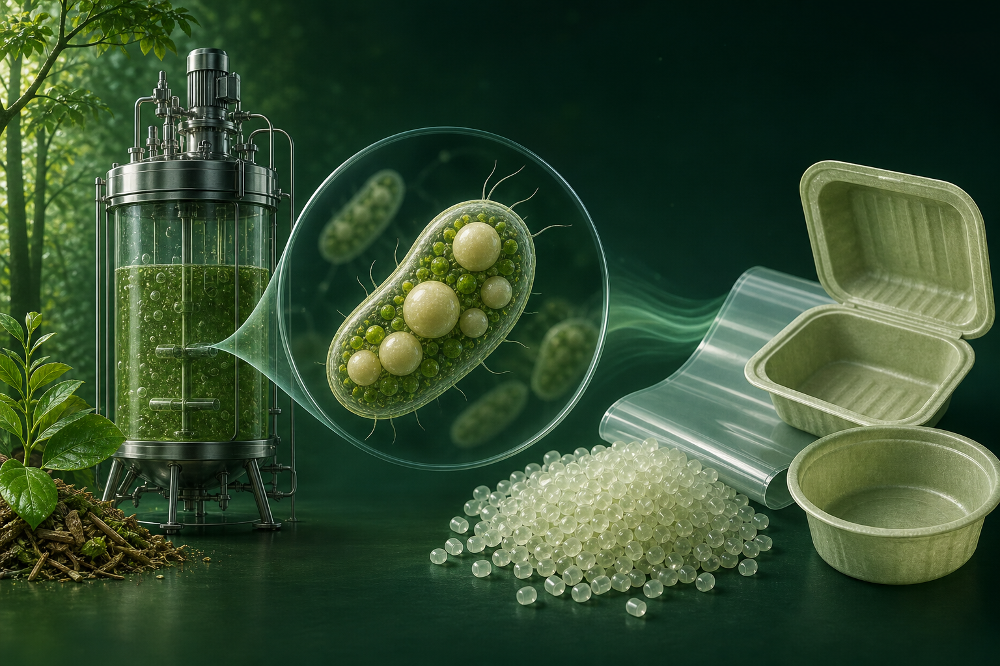

万吨级项目进入设计，不等于投产
Bioextrax 披露 PHBV 项目启动基础设计。月刊区分计划规模、工程节点与实际产出；原料工艺申请、应用测试和订单也不混为一谈。
查看原始来源不限于产业、论文与专利：追踪政策标准、产品应用、融资合作、科研成果与社区需求。原始来源优先，中文提炼，每月一期。
聚羟基脂肪酸酯（Polyhydroxyalkanoates）是一类由微生物合成并储存在细胞内的生物聚酯，可利用糖、植物油、有机废物流乃至生物源碳作为原料。
PHA 不是单一材料，而是包含 PHB、PHBV、PHBH、mcl-PHA 等多种聚合物的材料家族。通过改变单体组成、分子量、结晶度和配方，可获得从刚性包装到柔性薄膜、纤维、涂层、农业载体及医用材料等不同性能。
重要边界：生物基不等同于可在所有环境中快速降解；实际表现取决于材料牌号、制品厚度、温度、湿度、微生物条件及相应测试标准。

六月—八月观察窗 · 五月历史刊保留
共 178 条记录，含明确标注的题录与信号
08.01—08.30
放大验证与证据边界
Bioextrax 披露 PHBV 项目启动基础设计。月刊区分计划规模、工程节点与实际产出；原料工艺申请、应用测试和订单也不混为一谈。
查看原始来源CO₂ 与甲酸路线、数据驱动发酵、动物营养、压电材料和生态响应同步出现。论文、综述、会议摘要及预印本分别标注，阴性结果、撤稿与更正也纳入观察。
PHBH 人工草坪进入市政空间，Caleyda 完成杯具样品；欧盟 PPWR 开始适用。样品不等于获批食品接触制品，生物基也不自动满足全部包装义务。
本期 90 条 · 当前筛选 90 条
按所标日期倒序，登记日不等于发表日
当前显示 90 条。论文 / 综述 / 题录不等于同一证据强度；“登记线索”尚未确认首次上线日。检索说明 ↗完整文字索引（网络慢时可用）↗
题名聚焦农业废物作为 PHA 原料及循环经济框架。本轮已核实题录与日期，未取得摘要，不推断实验结果。
Geeta Gahlawat, Neha Rani Bhagat, Dipneet Kaur · DOI 10.1007/s43621-026-04480-3
Sustainable production of polyhydroxyalkanoates from agricultural wastes within a circular economy framework
研究比较 PVC 与 PHA 微塑料暴露；所测常规生理指标未显示明显损害，但肠道群落和部分潜在致病菌属发生变化。
Manxin Chen, Mei Wang, Shijie Wu, Zhongqi Wang, Jihai Gu, Zhihua Ni, Yuming Zhang · DOI 10.3390/fishes11090503
Toxicity and Microecological Responses of Daphnia magna and Danio rerio to PVC and PHA Microplastics: Focusing on Trophic Pathogen Enrichment
基于 1205 个循环，同时预测最大 PHA 含量与周期增量，并采用分组验证评估模型。
Seongbong Heo, Hyeongju Park, Sangchul Lee, Young Mo Kim · DOI 10.1016/j.biortech.2026.135732 · PMID 42660363
Data-driven interpretation of mixed-culture polyhydroxyalkanoate accumulation using dual-target machine learning framework.
Synfacts 刊载烷叉基 β-丙内酯聚合相关研究亮点。本条是文献简评，不作为独立原创研究重复计算其成果。
· DOI 10.1055/a-2914-9437
Alkylidene β-Propiolactone: A Scalable Monomer for Recyclable Polyhydroxyalkanoates
比较 AzPhaP 与 C 端截短蛋白的表面活性；两者均能降低表面张力，完整蛋白形成的乳液更稳定。
Rafael Locatelli Salgado, Matheus Ítalo Bonfim Aragão, Éverton de Almeida Alves Barbosa, Julia Mayrink Ferreira Alves, Fernanda Gonçalves Barbosa, Thiago Vargas Seraphim, Luccas Caitano Salgado, Abelardo Silva Júnior, Juliana Lopes Rangel Fietto, Júlio César Borges, Monique Renon Eller, Gustavo Costa Bressan · DOI 10.1016/j.ijbiomac.2026.154080 · PMID 42648675
Characterization of the granule-associated protein AzPhaP from Azotobacter sp. FA8 as a promising protein-based surfactant.
综述游离氨预处理对污泥资源回收的影响，PHA 是讨论的潜在资源化产物之一。
Jiamin Zhang, Qiuxiang Xu, Yingqun Ma, Esaïe Kouadio Appiah Kouassi, Kouassi Benjamin Yao, Patrick Drogui, Rajeshwar D Tyagi, Dongbo Wang, Jonathan W C Wong · DOI 10.1016/j.biortech.2026.135730 · PMID 42648384
Free ammonia-driven sewage sludge valorization: from in-situ pretreatment to energy and resource recovery.
题录涉及 Enterobacter MPLSI2 的 PHA 合成与回收。本轮未取得摘要，仅作题录级收录。
Berhanu Abegaz Mulat, Leta Guta Inki, Osman Ahmed Zelekew, Seid Mohammed Ebu · DOI 10.1007/s42452-026-09400-8
Recovery of polyhydroxyalkanoate from the newly identified strain Enterobacter sp. MPLSI-2 isolated from a plastic waste landfill
在营养限制与前体供给条件下，Synechocystis 6803 合成含三类单体的 PHA，报告含量达细胞干重的 40.16%。
Sadaf Tanweer, Bhabatarini Panda · DOI 10.1007/s00284-026-05106-7 · PMID 42645541
Exploring the Potential of Synechocystis sp. PCC 6803 for P(3HB-co-3HV-co-4HB) Terpolymer Production.
Akanksha Patel 的报告讨论无定形 PHA 在下一代可堆肥材料中的性能调节作用，并涉及 PHACT 1000P。
报告人：Akanksha Patel · Performance enhancing amorphous PHA for next-generation compostable solutions
用户围绕真空袋、纸线盘变形、自动供料兼容性和可回收线盘交换经验，讨论材料之外的包装减量。
last30days 补充网页检索 · 回收设想不等于已上线回收服务
梳理真实市场食品废物的酸化、底物组成和下游回收，指出一体化示范证据仍有限。
U. Divyashree, M. Deepa, P. Karthika · DOI 10.9734/afsj/2026/v25i9917
Valorisation of Market Food Waste for Sustainable Polyhydroxyalkanoate Production: A Critical Review of Feedstock Variability, Bioprocess Integration and Scale-Up
综述原料、合成通路、绿色回收和多产品生物炼制，讨论成本与认证边界。尚未经同行评议。
Augustine Odibo · DOI 10.26434/chemrxiv.15007807/v1
Valorization of Waste Biomass for Polyhydroxyalkanoate (PHA) Production: A Comprehensive Review of Feedstocks, Microbial Biosynthesis Pathways, Recovery Strategies, and Integrated Biorefinery Approaches
专利围绕含 PHA 预制件的再加热、热松弛与注射拉伸吹塑等工艺，面向容器成型。
权利人：Société des Produits Nestlé S.A. · US12715170B2 · 美国 · PCT/EP2022/075735 · 既有公开 US20250128465
研究 EM20010 的注塑流动及力学表现，性能对加工温度、压力等条件敏感。
Mariusz Fabijański, Jacek Garbarski · DOI 10.3390/ma19173587
Selected Functional and Processing Properties of Polyhydroxyalkanoates
Ni@NC 生物阴极与 Cupriavidus necator 耦合，报告 PHB 浓度约 192.7 mg/L。
Fei Zheng, Liang Chen, Mingzhi Zhang, Zhibin Wei, Yaru Lv, Zhenyu Geng, Rongyue Sun, Wenjing Wang · DOI 10.1016/j.biortech.2026.135712 · PMID 42636899
Electron‑metabolic coupling enhancement driven by Ni core‑shell cathode for efficient CO2‑to‑PHB conversion in electrochemical biological coupling system.
海洋来源菌株 MaRe06 的 PHA/PHBV 显示抗生物膜活性，并开展蜡螟模型安全性评价。
Leidy J García Maza, Deisiane Da Rosa, Walter O Beys-da-Silva, Lucélia Santi, Augusto Schrank, Marilene Henning Vainstein, Alexandre J Macedo · DOI 10.1016/j.bioorg.2026.110431 · PMID 42641235
Short chain length polyhydroxyalkanoate (scl-PHA) produced by the marine bacterium Pseudomonas sputi MaRe06 inhibits Staphylococcus aureus biofilm formation.
Compost3D 2 讨论中，用户关注树脂组成、生物基含量与“家庭堆肥”证据，并提出检测需求。帖子中的配方猜测未获独立验证。
last30days 补充网页检索 · 社区观点，不是认证记录
题录关注嗜盐微生物的 PHA 生物合成；本轮未取得摘要，不推断具体产量。
Ehdаа А. А. Sааdаwi, Yasser Fathy Abdelaliem, Gamal M Hassan, Ibrahim M. Ibrahim · DOI 10.21608/fjard.2026.502869.1163
Halophilic Microorganisms as Sustainable Cell Factories for Polyhydroxyalkanoate (PHA): Ecology, Biosynthesis, Extraction, Characterization and Potential Applications
研究组合原子力显微、图像分析与拓扑数据分析，关联 P3HBV 薄膜结构和 C2C12 细胞黏附。
Fares D. E. Ghorabe, Ashish T. S. Ireddy, Pavel S. Zun, Israel A. Huaman, Sviatlana A. Ulasevich, Aleksandr S. Aglikov, Dmitry A. Kozodaev, Tatiana G. Volova, Ekaterina I. Kessler Shishatskaya, Michael Nosonovsky, Ekaterina V. Skorb · DOI 10.1021/acs.langmuir.6c02572
Integrative Infochemistry of Polyhydroxyalkanoate Films: Multimodal Data, Topological Tuning, and Cell–Surface Interfaces
综述塑料解构、底物转化与 PHA 发酵的耦合，强调化学或酶解与微生物代谢之间的接口。
Masoumeh Mohandessi, Krishanthi Bandara, Neda Arabzadeh Nosratabad, Xianglan Bai, Caixia Wan · DOI 10.1016/j.biotechadv.2026.109019 · PMID 42632604
Closing the loop on plastics: Biological and hybrid routes for converting plastic waste to polyhydroxyalkanoates.
研究激光表面处理及纤维素纳米晶、碳纳米管填料对复合材料的影响，较高填料水平可能损害相容性。
Rafaela Campos Queiroz, Vanessa Modelski Schatkoski, Rodrigo Luiz Moraes Saldanha Oliveira, Yannic Sterzl, Alexandra Reif, Heino Besser, Simone Weigel, Tim Scharnweber, Ana Paula Lemes, Carolina Ramos Hurtado, Wilhelm Pfleging, Dayane Batista Tada · DOI 10.1007/s10853-026-13569-z
Laser-induced surface texturing and nanomaterial functionalization of PLA/PHBV surfaces for enhanced cell adhesion
用户讨论跨境购买价格、运输成本及纯 PHA 与 PLA/PHA 共混产品的区分；评论中的品牌和配方判断未经本站验证。
last30days 补充网页检索 · 价格仅为发帖者观察，不作实时报价
题名涉及 PHA 打印条件与尺寸精度优化。本轮核实题录和上线日期，未取得摘要。
Anita Jena, Bijaya Bikram Samal, Cheruvu Siva Kumar, Shailendra Kumar Varshney · DOI 10.1007/s40009-026-02354-w
Sustainable 3D Printing of Polyhydroxyalkanoates: Material Characterization, Printability, and Parametric Optimization for Enhanced Dimensional Accuracy
题录涉及废水光生物反应器的微藻生物质水解物与 PHB 发酵。 本条按数据库登记日归档，具体首次上线日待核。
B. Muñoz-Madariaga, A.N. Pila, S. Bordel, A.A. Filipigh, S. Bolado-Rodríguez · DOI 10.1016/j.biteb.2026.102999
Polyhydroxybutyrate (PHB) production by Paracoccus denitrificans from hydrolysates of microalgal biomass grown in wastewater treatment photobioreactors
企业文章引用既有文献讨论氧传递、碳源成本与补料方式。文中主要工艺例证来自此前研究，并非本月发布的独立三年生产数据集。
企业观点 · 旧文献解读与新项目事实分开
研究碳源设定与低温脱氮，胞内 PHA 储存参与碳分配和后续利用。
Jiyu Zhang, Qionghua Zhang, Yadong Xie, Haijun Mi, Haojun Sun, Mawuli Dzakpasu, Xiaochang C Wang · DOI 10.1016/j.watres.2026.126769 · PMID 42632135
Carbon setpoint regulation enables stable endogenous denitrification in an adaptive activated sludge system under low C/N and low-temperature conditions.
题录涉及四环素负载 PHBV 微球及穿心莲内酯复合膜。本轮未取得摘要，不报告未经核实的疗效。
Nootchanartch Panith, Sasivimon Pramual, Aree Wanasuntronwong, Rudee Surarit, Jisnuson Svasti, Nuttawee Niamsiri · DOI 10.1007/s10924-026-03945-w
Poly(hydroxybutyrate-co-hydroxyvalerate) Composite Membrane Containing Tetracycline Microspheres and Andrographolide for the Treatment of Periodontitis
研究 Cupriavidus necator 的碳流重分配，PHB 合成阻断是代谢工程策略的一部分。
Shuang Sha, Yanjun Li, Xiaowei Peng · DOI 10.1007/s10529-026-03776-8 · PMID 42622942
Engineering Cupriavidus necator for L-threonine production.
研究相容化处理、植物纤维加入与老化性能的关系；改性改善部分力学保持，纤维影响崩解。
Jorge R. Robledo‐Ortíz, Kevin G. Ahumada, Denis Rodrigue, Berenice Clifton‐García, Aida A. Pérez‐Fonseca · DOI 10.1002/pola.70309
Accelerated Weathering and Composting of Poly(hydroxybutyrate‐ co ‐hydroxyvalerate)/Agave Fiber Biocomposites Compatibilized With Glycidyl Methacrylate
压力条件改变共聚物组成，摘要所报 3HV 由约 48% 升至 69% 为质量分数（w/w），同时存在得率权衡。
Birk Achenbach, Pravesh Tamang, Günter E M Tovar, Susanne Zibek · DOI 10.1002/biot.70298 · PMID 42619429
Pressure Dependent Changes in CO2-Concentrations Modulate the 3-Hydroxyvalerate Fraction in Terpolymeric Polyhydroxyalkanoates.
公司披露合作方已支付首阶段款项，最高 10,000 吨/年 PHBV 项目启动基础设计，计划约五个月；详细设计、建设与启动等后续阶段仍在协商。报告也提及菌株工程实验室、防晒应用测试，以及因客户重组延后的口香糖测试。
瑞典 · Bioextrax / Chematur 合作链条 · 同一报告中的项目与测试进展合并收录
申请涉及非木质木质纤维素与聚合物构成的复合材料，PHA 是重点选项之一，面向一次性制品加工。
申请人：Upcycle Holding B.V. · US20260242605A1 · 美国 · 申请日 2024-04-26
汽车用生物基复合材料申请涉及多种组分，PHA 是可选材料之一，并非全部方案都必须采用 PHA。
申请人：Hyundai Motor、Kia、DY Deokyang、HDC Hyundai Engineering Plastics · US20260242581A1 · 美国 · 申请号 19/291352
Vibrio alginolyticus Mo245 在甘油体系中联产 PHB 与糖胺聚糖，24 小时分别报告约 1.78 和 1.29 g/L。
Beatriz Almeida, Patrícia Concórdio-Reis, Cristiana A V Torres, Xavier Moppert, Maria A M Reis, Filomena Freitas · DOI 10.1007/s00449-026-03409-4 · PMID 42616043
Exploitation of Vibrio alginolyticus Mo245 as a dual producer of a glycosaminoglycan and poly(3-hydroxybutyrate) from glycerol.
出版社摘要称 100°C、90 分钟退火可增强 PHBV 纳米纤维的结晶与高频压电表现。 本条按数据库登记日归档，具体首次上线日待核。
Fatemeh Mokhtari, Andrea Bergamini, Eleonora Ferraris, Veerle Bloemen, Hans Hallez, Arn Mignon, Veerle Vandeginste · DOI 10.1039/d6ma00927a
Effect of thermal annealing on crystallinity and piezoelectric performance of poly(3-hydroxybutyrate- co -3-hydroxyvalerate) (PHBV) nanofibers at high frequency
公司宣布提交与高效利用糖蜜有关的 PHA 工艺申请，并讨论蛋白质丰富的低成本原料及预处理需求。公告未给出可核对的公开文本、申请号或法域。
申请主体：Bioextrax · 申请/公开号与国家或地区未披露
Haloarcula 废物碳氮源研究中，重量法结果高于气相色谱定量，提示共提取物可能抬高表观含量。
Manel Ben Abdallah, Kishor Kumar Sadasivuni, Maroua Cherif, Sami Sayadi · DOI 10.1016/j.jenvman.2026.130732 · PMID 42612279
Bioconversion of waste-derived carbon and nitrogen streams into a poly(3-hydroxybutyrate)-rich bioplastic film by extremely halophilic archaeon Haloarcula sp. PLQ.
专利描述含植物纤维、碳酸钙及多种聚合物的复配体系，PHA 是所列生物降解材料成分之一，基体可涉及 PE 或 PP。
US12709678B2 · 美国 · 申请日 2022-05-27 · 权利人以原始登记为准
研究一体化预处理与酶解路线，报告 PHB 浓度约 7.64 g/L、含量约 85.89%。
Clara Matte Borges Machado, Luciana Porto de Souza Vandenberghe, Ariane Fátima Murawski de Mello, Gustavo Amaro Bittencourt, Alexandra M Rozhkova, Ivan N Zorov, Susan Grace Karp, Vittoria Gomes Michelin, Carlos Ricardo Soccol · DOI 10.1002/bab.70197 · PMID 42608781
Second-Generation Polyhydroxybutyrate Production From Pretreated Corn Lignocellulosic Fraction as a Strategy to Repurpose by Products From the Corn-Processing Chain.
题录已登记，当前元数据卷期指向 2027 年 2 月；首次上线日未得到确认。 本条按数据库登记日归档，具体首次上线日待核。
Fayaazuddin Thajuddin, Chandru Ashok, Arutselvan Chithirai, Asraf Sithikka Rasheed, Muthu Kumar Thirunavukkarasu, Ramanathan Karuppasamy, Thajuddin Nooruddin, Dhanasekaran Dharumadurai · DOI 10.1016/j.biombioe.2026.109969
Statistical optimization of biomass production in Limnospira fusiformis NRMCF6962, evaluation of polyhydroxybutyrate accumulation, and application in tannery effluent phycoremediation
研究将较长链 PHA 储存与侧流强化生物除磷性能联系起来。
Albie Gan, Gilda Carvalho, Liu Ye, Adrian Oehmen · DOI 10.1016/j.watres.2026.126743 · PMID 42624064
Impact of long-chain-length polyhydroxyalkanoates on return sludge sidestream enhanced biological phosphorus removal.
研究碳营养平衡变化与储存代谢，观察到 PHB 积累的时间差异。
Dilani D Jayathilaka, Md Iqbal Hossain, Linda L Blackall, Ka Yu Cheng, Ranjan Sarukkalige, Maneesha P Ginige · DOI 10.1016/j.watres.2026.126732 · PMID 42632136
Overflow metabolism drives high-rate carbon, nitrogen and phosphorus sequestration in an enriched aerobic microbial community.
题录讨论 Arthrospira platensis 的 PET 微塑料处理及 PHB 联产。 本条按数据库登记日归档，具体首次上线日待核。
Muhamad Maulana Azimatun Nur, Dyah Ayu Musyrifah, Erica Munazah · DOI 10.1016/j.bcab.2026.104225
Synergistic biodegradation of polyethylene terephthalate microplastics and polyhydroxybutyrate coproduction by Arthrospira platensis under photo-Fenton stress
研究不同碳源、碳酸氢盐及 FnrP 相关调控条件下的 PHB 积累与代谢权衡。
Ivo Fukala, Vojtěch Sedláček, Igor Kučera · DOI 10.1007/s11274-026-05198-0 · PMID 42599349
Exploring new approaches to enhance polyhydroxybutyrate accumulation in Paracoccus denitrificans.
比较 PHB、PLA/PBAT、PBS 等材料在 41 天堆肥过程中的群落与功能变化。
Soo Yeon Lee, Subin Hwang, Ian Cho, Hyoyoung Lee, Jihun Lee, Doyoung Koo, Jae-Woo Kim, Kyung-Suk Cho · DOI 10.1007/s10532-026-10359-x · PMID 42599332
Functional dynamics and interactions within the bacterial community responsible for biodegradable plastic degradation during aerobic composting.
题录涉及 NSPS90 菌株的 PHB 生产优化及合成基因网络。 本条按数据库登记日归档，具体首次上线日待核。
Guddu Kumar Gupta, Eetika Chot, Danyang Shao, Nitu Shah, Anjali Topno, Rajeev K. Azad, Pratyoosh Shukla · DOI 10.1016/j.biteb.2026.102994
Machine learning based optimization of polyhydroxybutyrate (PHB) production from Gordonia amicalis NSPS90 and elucidation of PHB biosynthesis genes, their pathways through gene network analysis
题录涉及脱木质素及 PHBV 基偶联剂浸渍的协同界面改性。 本条按数据库登记日归档，具体首次上线日待核。
Zhuoyu Lu, Nuoyan Ou, Lanying Lin, Kun Liu, Xiaolu Wu, Chuanshuang Hu, Jiangtao Xu, Yonghui Zhou, Mizi Fan · DOI 10.1016/j.indcrop.2026.124155
Interfacial enhancement of bamboo flour/poly(3-hydroxybutyrate-co-3-hydroxyvalerate) biocomposites enabled by synergistic treatment via delignification and PHBV-based coupling agent impregnation
报道广州麦得发落户广州民科园，并获得白云金控旗下白云基金战略投资，金额未披露。报道中的既有产线和此前医用材料备案背景不作为八月新增事件重复计算。
中国广州 · 麦得发 / 白云基金 · 金额未披露
申请涉及以混合中链脂肪酸驯化活性污泥，并调整负荷进行 PHA 积累的过程。
申请人：湖南大学 · CN122564058A · 中国 · 申请日 2025-02-14
以棕榈仁和空果串相关原料培养 Paraburkholderia PFN29，报告 PHB 约 1.12 g/L、占细胞干重约 59.02%。
Sumintra Chaimongkol, Thayat Sriyapai, Pichapak Sriyapai · DOI 10.55003/cast.2026.271251
Production of Polyhydroxyalkanoates (PHAs) from Oil Palm Waste Using Paraburkholderia sp. PFN29
100 头猪、6 周试验评估聚 3-羟基丙酸酯饲料添加；主要观察指标没有显著改善，部分结果仅呈趋势。
Vetriselvi Sampath, Kyejin Lee, Jeungyil Park, In Ho Kim · DOI 10.3390/life16081326 · PMID 42653014
A Preliminary Evaluation on Poly(3-Hydroxypropionic Acid) as a Novel Feed Additive on Growth Performance, Nutrient Digestibility, Selected Culturable Fecal Bacterial Counts, and In Vitro Fecal Fermentation in Growing Pigs.
研究在 Cupriavidus necator 中组合假单胞菌来源嵌合颗粒蛋白与 II 类 PHA 合酶。
Ares Arrad, Izumi Orita, Toshiaki Fukui · DOI 10.1186/s12934-026-03085-9
Chimeric pseudomonad phasin enhances biosynthesis of short-medium-chain-length polyhydroxyalkanoates (PHAs) by Cupriavidus necator employing class II PHA synthase
研究胭脂树橙、辣椒色素等天然着色体系与发酵来源 PHB 的结合及稳定性。
Maria Luiza de Oliveira Zanini, Ketnen Rieffel Das Chagas, Camila Rios Piecha, Andressa Baptista Nörnberg, André Ricardo Fajardo, Patrícia Silva Diaz · DOI 10.1111/cote.70098
Naturally coloured poly(3‐hydroxybutyrate)
Nature Ecology & Evolution 研究发现部分动物或原生生物可利用微生物储存聚合物，并进行相关酶功能验证。
Caroline Zeidler, Harald R Gruber-Vodicka, Dolma Michellod, Grace D'Angelo, Stefan Becker, Henry Berndt, Juliane Wippler, Marlene Violette, Manuel Kleiner, Alba Porta-Fidalgo, Rebekka S Janke, Kristina Weinert, Manuel Liebeke, Nicole Dubilier, Maggie Sogin · DOI 10.1038/s41559-026-03153-8 · PMID 42595787
Animal degradation of microbial storage polyhydroxyalkanoates.
用户分享三种灯具的 PHA 打印体验，评论讨论翘曲、冷却需求和不同颜色表现。
last30days 补充网页检索 · 主帖及评论合并为同一讨论
题录涉及 MK6 菌株利用糖蜜合成 PHA 及响应面优化。本轮未取得摘要，不列未经核实的最优产量。
Habiba Begum, Asma Bibi, Nousheen Bibi, Tariq Mahmood, Aisha Ghani, Walid F. A. Mosa, Khalid F. Almutairi, Ahmad A. Omar, Sumera Afzal · DOI 10.1186/s12896-026-01213-2
Sustainable valorization of sugarcane molasses into polyhydroxybutyrate by Pseudomonas plecoglossicida MK-6 and optimization using response surface methodology
研究固定化聚磷菌填料在低磷条件下的表现，PHA 储存为后续磷摄取提供碳代谢支持。
Wei Song, Haiyuan Shang, Hong Yang · DOI 10.1016/j.biortech.2026.135602 · PMID 42580423
Performance stability and adaptability of embedded phosphorus removal biofillers: insights from microbial community responses and regulatory mechanisms.
系统讨论不同填料的增强、界面调控及材料性能变化。
Gia Phuc Lam, Ngoc Tan Pham, Chi Nhan Ha Thuc, Nicola Curreli, Van‐Dung Le, Duc Anh Dinh · DOI 10.1002/pen.70758
Recent Advances in the Synthesis, Production, Processing, and Applications of Polyhydroxyalkanoates and Polyhydroxyalkanoate‐Based Composites
委员会发布 PPWR 开始适用的说明，涉及包装减量、物质限制及逐步实施的循环性要求。8 月 3 日官方 FAQ 为理解不同条款的适用时间提供补充。
欧盟 · Regulation (EU) 2025/40 · 开始适用日 2026-08-12；不同义务另有过渡期
公开文本涉及脂肪族聚酯、脂肪族—芳香族聚酯与 PHA 的纤维体系，以及纺丝和冷却工艺。
权利人：OceanSafe AG · US12703931B2 · 美国 · 发明人 Manuel Schweizer
专利涉及 PHA 共聚物与表面活性组分的化妆品组合物，关注成膜及疏水功能化等材料设计。
权利人：L'Oréal S.A. · US12702635B2 · 美国 · 申请号 US17/794753
期刊发布相关 PHB 超细纤维研究的撤稿通知。本轮未获得完整撤稿说明，不推测原因或责任。
P. M. Tyubaeva, A. A. Ol’khov, A. A. Popov, V. V. Podmaster’ev, A. V. Shishkin, A. L. Iordanskii · DOI 10.1007/s10692-026-10657-3
Retraction Note: Influence of Morphology of Nonwoven Ultrafibrous Polyhydroxybutyrate Materials on Interaction with Ozone
研究超临界 CO₂ 发泡及共混物末端行为；部分体系在 30°C 家庭堆肥条件下 4 个月质量损失约 84%，海洋环境表现不同。
Matteo Calosi, Marcel Dippold, Andrea D'Iorio, Elena Buratti, Holger Ruckdäschel, Monica Bertoldo · DOI 10.1002/mame.70318
Study of the Biodegradation Properties of Amorphous Blends of Poly(Lactic Acid) and Poly(3‐Hydroxybutyrate‐co‐4‐Hydroxybutyrate) Foamed With Supercritical CO 2
综述电化学与生物过程耦合制化学品，PHB 是其中一种目标产物。
Xuefeng Shi, Chang Li, Feng Guo, Yufan Jing, Yafei Guo, Hongliang Li, Meng Qiao, Xianzhu Huang, Xi Chen, Chuanwen Zhao, Wenming Zhang, Xing Zhang, Jie Zeng · DOI 10.1002/anie.9183730 · PMID 42573027
A Review of Electrochemical-Biological Coupling Systems for CO2 Valorization: Catalytic Fundamentals, System Integration, and Industrial Outlook.
题录涉及 Alcaligenes ammonioxydans SRAM；当前元数据卷期指向 2027 年 2 月，首次上线日待确认。 本条按数据库登记日归档，具体首次上线日待核。
Shruti S. Raut, Arpit Sharma, Alok Shukla, Amit Singh, Abha Mishra · DOI 10.1016/j.biombioe.2026.109924
Sustainable biosynthesis of polyhydroxybutyrate (PHB) using Musa acuminata peels under submerged fermentation by novel Alcaligenes ammonioxydans SRAM: Impact of elemental stress conditions
周报所收录 AP 专题展示 Woburn 研发设施中的 PHA 餐叉与包装膜，并讨论成本溢价和堆肥体系约束。CJ 于 8 月 21 日再次介绍同一报道，本月合并为一条；AP 页面本轮抓取受限。
已与 8 月 17 日周报交叉核对 · 原始报道与企业转述合并
研究咖啡渣预处理与发酵，报告 PHB 约 3.89 g/L、含量约 60%。
Ganesh Saratale, Rijuta Ganesh Saratale, Ram Naresh Bharagava, Anil Kumar Patel, Dong Su Kim, Ramesh Kumar, Han Seung Shin · DOI 10.3390/polym18161945 · PMID 42655226
Utilization of Spent Coffee Waste Biomass as a Promising Feedstock in Bioplastics Production Using Cupriavidus necator.
SL28 菌株在 50°C 培养条件下报告 PHB 约 1.383 g/L、含量约 62.57%。
Duc Quan Nguyen, Thi Trang Do, Nhung Thi Hong Lai, Minh Thi Tuyet Phan, Tu Thi Minh Hoa, Thoa Kim Nguyen · DOI 10.3390/pr14162539
Production and Characterization of Poly(3-hydroxybutyrate) by Thermophilic Geobacillus sp. Strain SL28 Isolated from a Natural Hot Spring
SP50a 基因组资源中讨论 fabG 等可能关联 PHA 代谢的基因。
Itzel Del Carmen Fonseca-Barrera, Carolina Peña-Montes, Karla Gabriela Álvarez-Villagomez, Silvia Portilla-Vázquez, Patricia Guillermina Mendoza-García · DOI 10.1128/mra.00434-26 · PMID 42565583
Draft genome sequence of Enterococcus lactis SP-50a, isolated from artisanal cheese, with potential to produce antimicrobial agents and biopolymers.
题录聚焦解聚酶活性测定与方法学问题；本轮未取得摘要，不比较未经核实的检测性能。
Laura I. de Eugenio, Lara Serrano-Aguirre, Virginia Rivero-Buceta, Isabel Pardo, M. Auxiliadora Prieto · DOI 10.1080/10242422.2026.2703589
Decoding PHA depolymerase activity: A methodological overview
研究报道 Paramecium jenningsi 中的 PHA 样包涵体，采用光谱及色谱质谱等分析。
Shahid Nawaz, Itrat Zahra, Ayesha Liaqat, Bushra Muneer, Ghulam Mustafa, Ayesha Arshad, Usama Shabbir, Awais Ibrahim, Tuba Arooj, Ibtissem Louiz, Amor Hedfi, Manel Ben Ali, Abdul Rauf Shakoori, Farah Rauf Shakoori · DOI 10.1016/j.mimet.2026.107642 · PMID 42567231
Solvent extraction and analytical characterization of polyhydroxyalkanoate inclusions produced by the microeukaryote Paramecium jenningsi.
综述酵母底盘的 PHA 合成路径、代谢工程与过程限制。
K Mohanrasu, Rajendran SelvaKumar, Ian Grainge, C M Arun, Akila Ravindran, Logeshwaran Panneerselvan, Thava Palanisami · DOI 10.1016/j.ijbiomac.2026.153992 · PMID 42567388
Harnessing yeast for polyhydroxyalkanoates (PHAs) production: Challenges, engineering strategies, and future prospects.
研究 PHBV/生物炭复合层的摩擦电输出，不同层数存在性能最优点，增加层数并非持续增益。
Yijun Hu, Hao Wang, Chenyan Hua, Juan Zhou, Yujian Chen, Chaofan He, Tingting Zhang, Yuxia Chen, Yong Guo · DOI 10.1002/slct.74057
Influence of Hierarchical Biochar Architectures on Dielectric and Triboelectric Behavior of PHBV Composites
研究提出大麻生物质利用与 phaCAB 工程设计，属于计算分析与构建方案。
Ziningi Rosebud Myeni, Sani Gumede, Nomfundo Ntombela, Farai Dziike, Nirmala Deenadayalu · DOI 10.3390/molecules31152729 · PMID 42588577
In Silico Design of phaCAB Expression Constructs for Cellulolytic Hosts Toward Hemp Hurd Valorisation and Polyhydroxybutyrate Biosynthesis.
研究 T 形与燕尾等几何互锁对双材料熔融沉积界面的影响。
Maria Catana Oancea, Catalin Tampu, Simona-Nicoleta Mazurchevici, Anastasios Tzotzis, Wojciech Sitek, Virgil Gabriel Teodor, Florin Susac, Monica Silvia Tatarciuc, Panagiotis Kyratsis, Ion Tiseanu, Cosmin Dobrea, Yujiao Ke, Viorel Păunoiu, Dumitru Nedelcu · DOI 10.3390/mi17080937 · PMID 42653578
Interlocking Interfaces for Enhanced Mechanical Properties in Bi-Component 3D Printing of Biodegradable Materials.
Paques 与 Happy Cups、H&P Moulding 合作，用 Caleyda PHA 制成杯子，连接本地材料与加工链。原文明确食品接触批准仍是后续准备事项。
荷兰 · Caleyda / Happy Cups / H&P Moulding
通过脂肪酶相关改造与适应性进化，PHS1 在 42°C 条件下利用油脂碳源，报告不同底物下的 PHA 积累。
Kyeongho Lee, Minkyeong Song, Seon Yeong Choi, Jeongvin An, Sung Kuk Lee · DOI 10.1007/s43393-026-00537-6
Engineering Cupriavidus cauae PHS1 as a non-model thermotolerant chassis for the direct conversion of palm oil and waste frying oil into polyhydroxybutyrate
研究从分子相互作用分析 PHA 溶解与萃取候选体系，讨论范德华作用贡献。
Athira Maria John, Sneha Anna Sunny, Abdullah Yahya Abdullah Alzahrani, Samy F. Mahmoud, Dalia I Saleh, Renjith Thomas · DOI 10.1002/mats.70054
Molecular‐Level Insights Into Solvent‐Dependent Interactions Governing the Solubility of Polyhydroxyalkanoates
研究功能化 PHB 的吸附循环及与光催化的组合，评估水处理用途。
Salvatore Marullo, Luigi Cino, Chiara Laferrera, Vincenzo M. Marzullo, Giuliana Impellizzeri, Francesca D'Anna · DOI 10.1002/adsu.70596
Hydrophobic Ionic Liquid‐Doped Poly(3‐hydroxybutirate) Membranes as Sustainable Systems for Efficient Dye Pollutant Removal and Photodegradation
PNAS 研究以电生成甲酸为中间体，连接多种微生物与目标产物，其中包括 PHB。
Jihoon Choi, Nicolas Grandel, Deepika Awasthi, Geonhui Lee, Abhishant Nigam, Yu Shan, Nathan E Soland, Maria Fonseca Guzman, Hye-Jin Jo, Diep N Pham, Peidong Yang, Blake A Simmons · DOI 10.1073/pnas.2608267123 · PMID 42550903
eFormate-mediated CO2 bioconversion: A modular electrochemical-microbial cascade compared across a diverse set of microorganisms.
研究 PLA/PHBV 共混体系，指出结晶结构变化可能延缓部分配方的崩解。
Vito Gigante, Corrado Sciancalepore, Róbert Várdai, Duccio Gallichi-Nottiani, Nóra Hegyesi, Laura Aliotta, Daniel Milanese, Béla Pukánszky, Andrea Lazzeri · DOI 10.1021/acsomega.6c03726 · PMID 42626577
Disintegration Behavior in Industrial Conditions of Poly(lactic acid)/Poly(hydroxybutyrate-co-valerate) Blends.
以空间分辨拉曼分析聚合物在真实海洋条件下的结构变化，观察无定形区域的优先变化。
Yuma Yamada, Harumi Sato · DOI 10.1021/acsapm.6c01496
Three-Dimensional Raman Imaging of Marine Biodegradation in Poly(3-hydroxybutyrate) and Its Copolymer in Seawater
文章比较多种微生物制造架构并讨论低成本目标；所述成本区间属于目标或构想，而非均已实现的工厂成本。
Christopher Childers · DOI 10.1016/j.jbiotec.2026.07.009 · PMID 42551588
Beyond chitin: Three microbial production architectures for landfill-degradable commodity plastics.
研究 PHBH 用于小型球状制品的材料性能及微生物条件下的质量变化。
Yebin Han, Seung Hun Lee, Yunhee Jeong, Tae Yun Kim, Geon Woo Doh, Seong Ho Park, Guk Hwan Shin, Jin Hyun Park, Hee Taek Kim, Jong-Min Jeon, Baeksoo Park, Jeong-Jun Yoon, Shashi Kant Bhatia, Yung-Hun Yang · DOI 10.1016/j.ijbiomac.2026.153891 · PMID 42551678
Polyhydroxyalkanoate-based BB bullets as alternatives to ABS bullets based on muzzle velocity, penetrating power, coloring effect, and microbial degradability.
研究 PHB 生产并借助计算方法分析潜在生物相互作用。
Safiye Elif Korcan, Nevin Çankaya, Serap Yalçın Azarkan, Şah İsmail Çivi, Gülderen Uysal Akkuş · DOI 10.1002/ffj.70138
Bacillus ‐Derived Polyhydroxybutyrate From Nutrient‐Rich Soils: Production, Structural Features, and Immunological Potential
Kaneka 披露 Green Planet PHBH 用于 Mizuno ReGreenGrass UMI，并在奈良县田原本町公共广场采用；居民铺设活动发生于 7 月 31 日。该材料并非本月首次开发。
日本 · 活动日 2026-07-31 · 本条按公告日归入八月刊
基于大样本文献梳理生物降解研究主题与协作网络，PHA 是涉及的材料之一。
Haibo Wang, Zhikang Guo, Yunan Liu, Hao Shen, Fang Chen, Mu Peng · DOI 10.3390/microorganisms14081695 · PMID 42655040
Global Hotspots and Trends in Microbial Plastic Biodegradation for Plastic Waste Management: A Mini-Review and Bibliometric Analysis.
基因改造改善底盘应对水解液抑制物的能力，报告 PHB 产出提高。
Taeyun Kim, Yuni Shin, Geonwoo Doh, Seung Hun Lee, Hyun Gi Koh, See-Hyoung Park, Kyungmoon Park, Jeong Chan Joo, Ji Hyeon Lee, Hyeok-Won Lee, Shashi Kant Bhatia, Yung-Hun Yang · DOI 10.1016/j.jbiotec.2026.07.013 · PMID 42543131
Increased tolerance to biomass-derived inhibitors by deletion of the transcriptional regulator mraZ in Cupriavidus necator H16.
研究微晶纤维素与相容化对共混物结晶和力学表现的影响。
Usman Saeed · DOI 10.3390/polym18151895 · PMID 42589824
Interfacial Engineering of Sustainable Microcrystalline Cellulose-Reinforced PLA/PHA Biocomposites for Enhanced Performance.
期刊发布相关 PHB 光子结构论文的更正记录。本轮未取得更正全文，不推断更正范围。
· DOI 10.1002/marc.70385
Correction to “Synchrotron X‐Ray Analysis and Morphology Evidence for Stereo‐Assemblies of Periodic Aggregates in Poly(3‐Hydroxybutyrate) With Unusual Photonic Iridescence”
为防止周报线索丢失，保留尚未补齐原始证据的项目，不将其表述为已经确认的批准或公开事件。
8 月 3 日周报记载 7 月 23 日事件；本轮尚未核对到对应美国公开号，不能确认首次公开日期。
周报所述美国阶段与既有 WO2025074872A1 关联；美国公开号及阶段事件日仍待核对，不重复当作全新专利族。
周报记载不同分子量 P3HA 与无机颗粒配方；缺少可核对的美国公开号和完整法律事件证据。
行业报道提及粤械注准20262020844；本轮未取得对应监管原始记录及材料组成文件，暂不确认“首个 PHA 器械获批”等表述。
基于已收录来源的编辑归纳
不是市场预测或专业意见
万吨级基础设计、20 m³ 预印本数据与小规模发酵研究属于不同成熟度。废物流利用、供氧、基因稳定性和回收环节共同决定经济性，不能用实验室得率替代工厂成本。
项目披露 ↗ · 放大预印本 ↗人工草坪、杯具、纤维、涂层与生物医用材料要求不同。家庭堆肥、海水质量损失、食品接触和医疗批准之间不能互相替代；样品与商业产品也应分开标注。
杯具样品边界 ↗ · 环境差异研究 ↗动物饲喂的非显著结果、微塑料生态响应、跨反应器预测限制及撤稿更正，同样影响技术判断。全面收集不应变成只保留正向消息，也不应把不确定线索升格为事实。
饲喂试验 ↗ · 生态研究 ↗本次增量覆盖：2026-07-16 至 2026-08-30（含首尾日，Asia/Singapore）。八月刊截至 8 月 30 日；七月下半月补入七月刊。滚动观察窗为六月—八月，五月历史刊继续保留。旧刊是当期快照，不代表所有旧链接与法律状态已在本次重新核验。
本轮结合企业公告、主管机构、期刊页面、Crossref、PubMed、专利公开文本及其镜像、行业媒体和公开社区检索。使用 PHA 全称、PHB、PHBV、PHBH、mcl-PHA 等变体，排除小行星、医学单体及其他同缩写误匹配。按 DOI、题名与作者去重，合并论文不同语言版本、机构解读和同一媒体事件；同一专利族的新授权或法域事件保留并说明，不等同于新发明。
周报交叉核对：对照“每周 PHA 信息汇总”8 月 3、10、17、24 日记录，补齐遗漏的论文、Bioextrax 项目与申请披露。九条尚缺精确上线日的文献按“数据库登记（非发表日）”单列，三项 Kaneka 美国申请保留于待核清单。纠正 PHBV 压力研究的 3HV 质量分数表述；AP 8 月 10 日报道与 CJ 8 月 21 日转述合并。
last30days 实际覆盖：已按本次 46 天增量窗口运行，并补充公开网页检索。Reddit 直接检索与 YouTube 等来源出现超时或无可用返回；X、TikTok、Instagram 未完成授权。引擎返回的同缩写小行星和不相关软件条目已排除，社区部分来自可访问的公开帖子。这些限制不代表相关平台没有讨论。
本次新增 / 补录 131 条。计数包含研究论文、综述、题录、登记线索、预印本、撤稿更正、报道与社区信号，并非同等强度的“已证实成果”。尽量扩展召回并保留待核项目，但受数据库收录延迟、访问权限及索引覆盖限制，不承诺绝无遗漏。任何批准、认证和专利法律状态以主管机构最新记录为准。